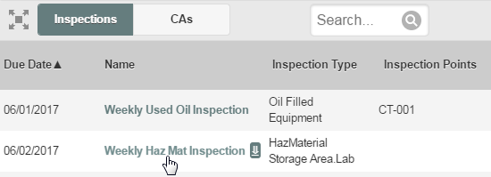
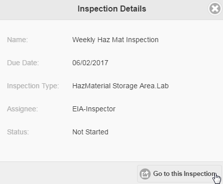
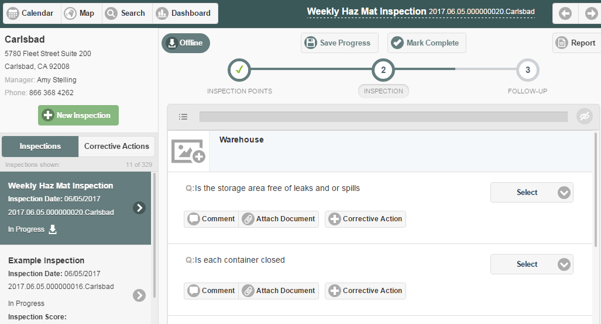

You can view inspections for a facility from either the Search screen or the Calendar page.
To view inspections for a facility:
Select the facility from the facility sidebar.
If the facility sidebar is not displayed on your screen, select the sidebar button to display it.
Select the Inspections button.
From the Search page you can search by key words or dates to filter the list.
You can change the facility by selecting another from the sidebar to refresh the list for that facility.
Select an inspection, either from the search list or the calendar.

In the pop-up window showing the inspection summary, select Go to this Inspection.

The inspection is displayed in view or edit mode, depending on the completion status and your permissions.
The navigation panel on the left will show a scrollable list of inspections for the facility. You can select an inspection to view it.
To view corrective actions, select the Corrective Actions tab.
